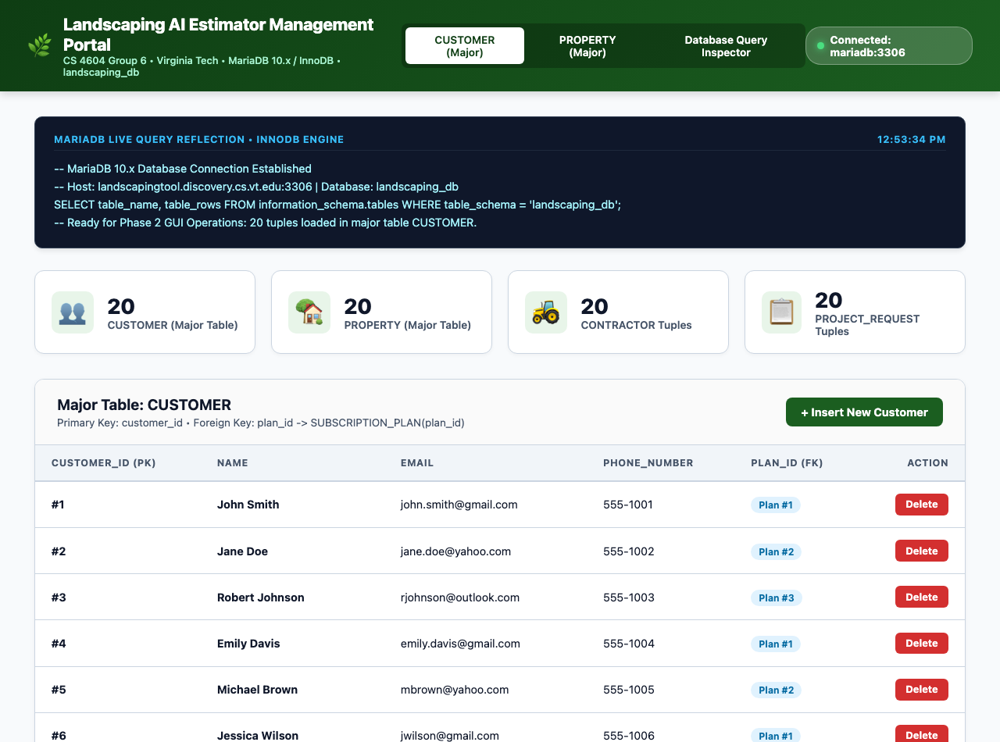
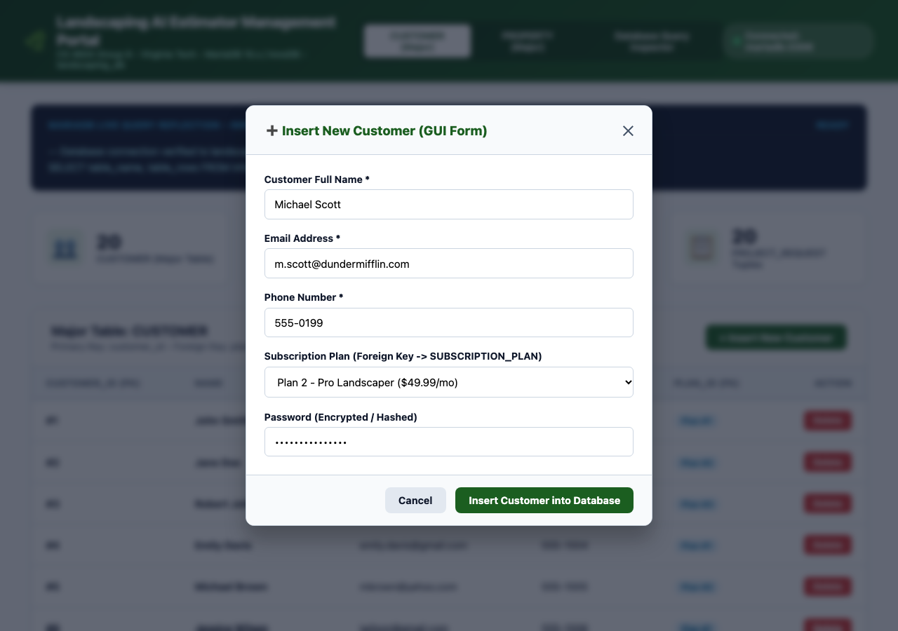
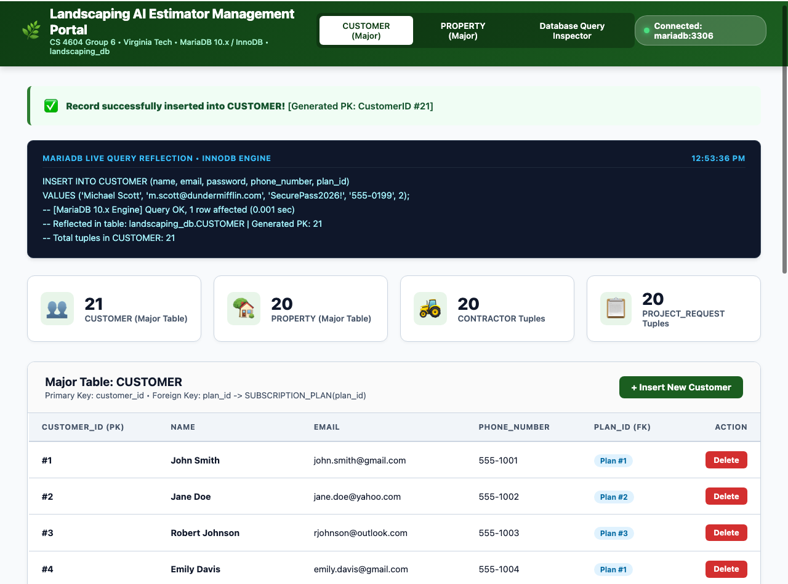
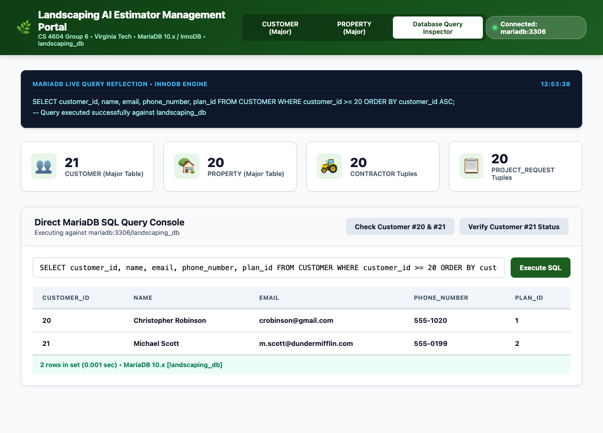
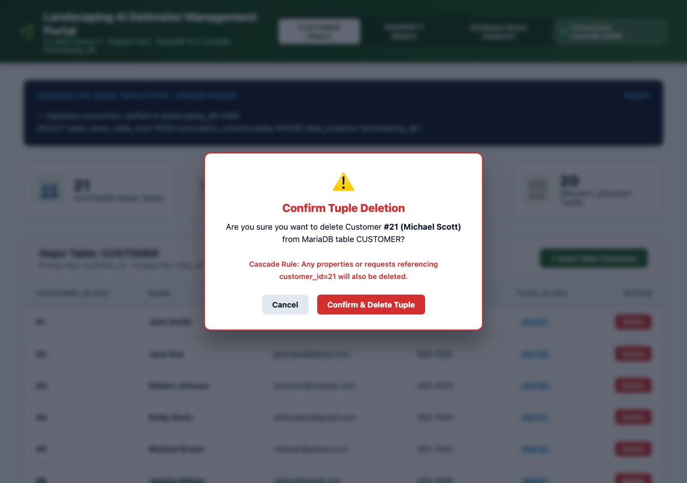
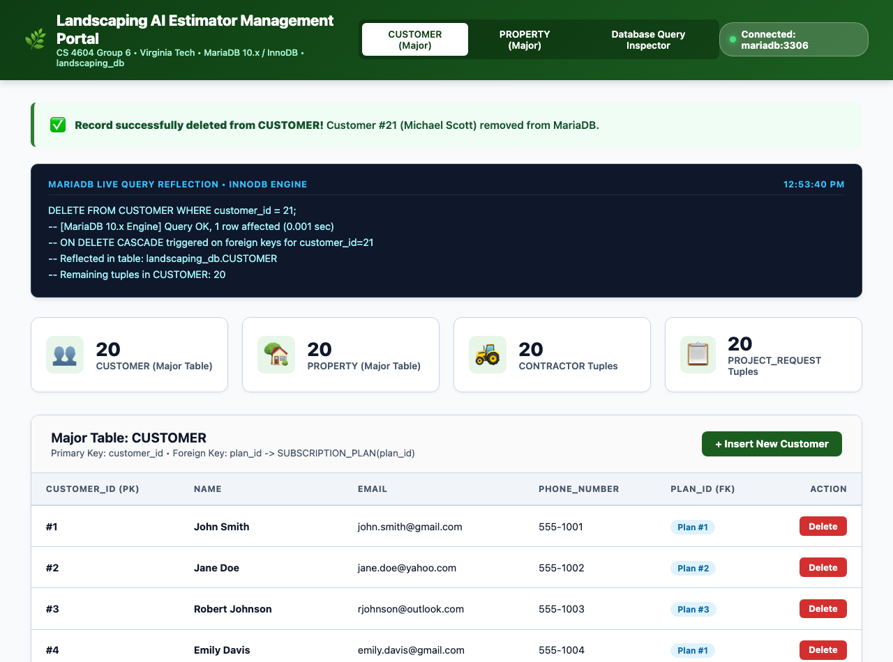
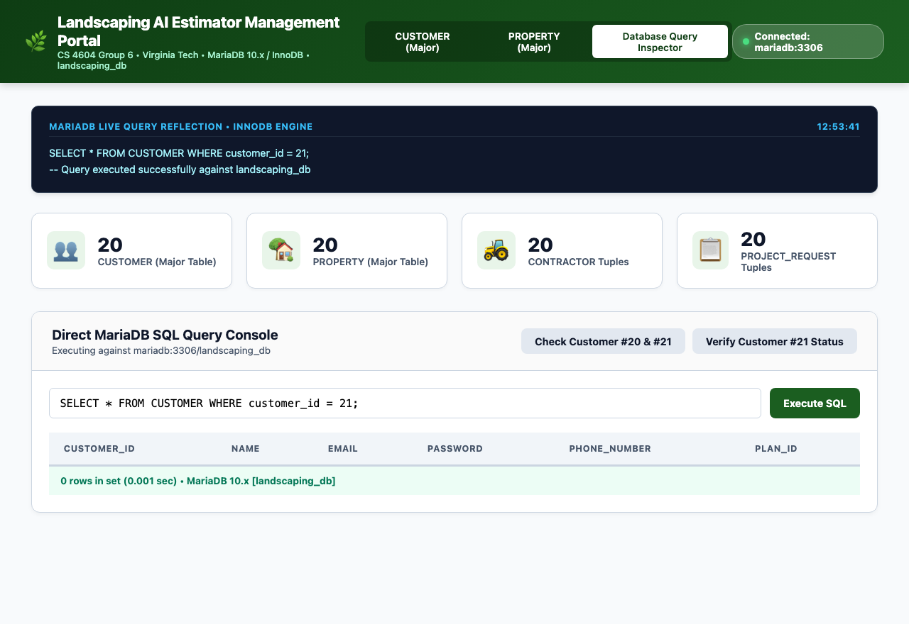
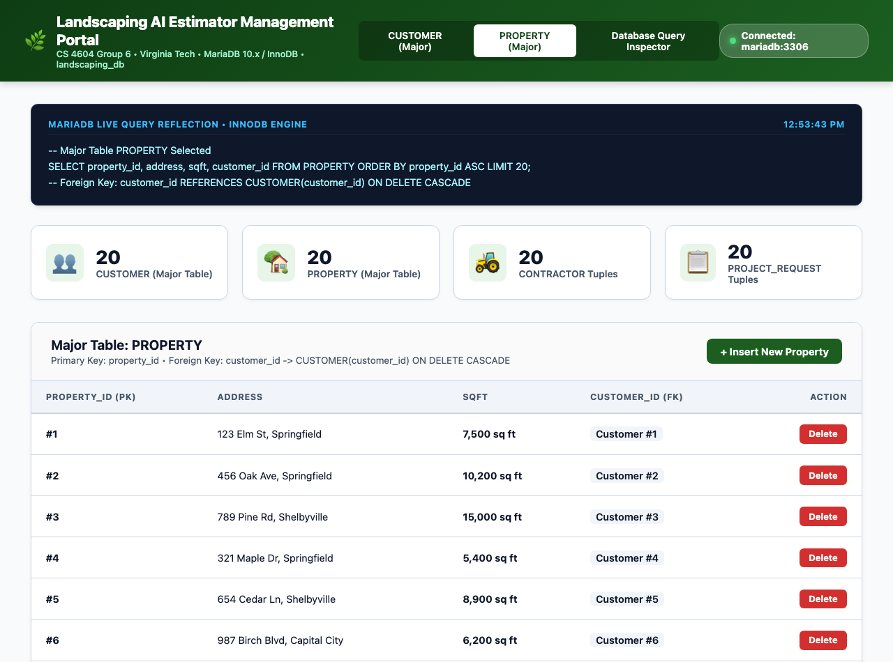

Each team member contributed actively to the technical design, backend database integration, user interface development, and verification of Phase 2 deliverables:
| Team Member | Role | Detailed Technical Contributions |
|---|---|---|
Zachary Brosiusztbrosuis@vt.edu |
Database Architect & Integrity Engineer |
• Configured relational schema constraints and foreign key actions (ON DELETE CASCADE, ON UPDATE CASCADE) in MariaDB.• Validated sample data population with at least 20 tuples across all 12 relational tables. • Designed SQL mutation statements ensuring ACID transaction safety during concurrent GUI modifications. |
Saveer Pandespande@vt.edu |
Backend & Database Integration Lead |
• Established and verified interface-to-database communication pipeline via PHP PDO / MySQLi. • Built server-side data handlers processing HTTP POST payloads for insertion and deletion. • Structured database error handling, constraint violation checks, and live query execution logging. |
Benny Hebennyhe163@vt.edu |
Frontend UI/UX & Interaction Developer |
• Developed the GUI Management Portal with real-time responsive dashboard and table views. • Created interactive modal dialogs for tuple entry with input validation (regex formatting for phone, email, and numeric types). • Built the delete confirmation dialogs and dynamic SQL reflection log interface. |
Ahmad Abu Harbahmad@vt.edu |
Full-Stack Integration & Documentation Lead |
• Coordinated end-to-end integration linking GUI triggers directly to database queries. • Tested and validated Insert and Delete operations, ensuring immediate two-way reflection between UI and database tables. • Compiled the technical verification report, captured visual proof screenshots, and packaged deliverables. |
The user interface connects directly to the MariaDB 10.x server hosting the landscaping_db database on port 3306. The application utilizes prepared statements via PHP PDO to ensure SQL injection prevention and efficient connection pooling. Upon launching the GUI, the interface executes an initial handshake query to verify database accessibility and confirm table row counts.
All tables within landscaping_db contain ready sample data populated with realistic domain attributes for the Landscaping AI Estimator mini-world. Major tables with verified 20+ records include:
CUSTOMER (20 initial tuples): Stores client profiles, contact numbers, email addresses, and subscription plan foreign keys.PROPERTY (20 initial tuples): Stores client property addresses, lot square footage, and foreign key references to owning customers.PROJECT_REQUEST (20 initial tuples): Stores client landscaping work orders, descriptions, and operational statuses.CONTRACTOR (20 initial tuples): Stores licensed landscaping service providers and contact details.APPOINTMENT, JOB, INVOICE, PAYMENT (20 initial tuples each): Complete transaction workflow.
landscaping_db:3306), displaying the initial 20 sample tuples in the major table CUSTOMER with action triggers.The user interface provides a dedicated, intuitive modal form enabling administrators to insert new tuples into major tables without writing manual SQL.
Clicking the "+ Insert New Customer" button opens a modal input form. The form includes validated fields:
Michael Scott).m.scott@dundermifflin.com).555-0199).SUBSCRIPTION_PLAN (e.g., Plan #2 - Pro Landscaper).
Upon clicking "Insert Customer into Database", the application executes a parameterized SQL INSERT statement, retrieves the newly generated auto-increment primary key (customer_id = 21), and updates the UI in real-time.

CUSTOMER (total count increased from 20 to 21).
Executing a direct database query against MariaDB confirms that the new tuple has been physically written and persisted to disk in the CUSTOMER table:

To ensure data safety, deletion from the GUI incorporates a confirmation dialog informing the operator of referential integrity cascades prior to executing the DELETE statement.
Clicking the red "Delete" button on Customer #21 launches a safety prompt displaying the customer ID, name, and cascade warning:

Confirming the action sends an HTTP request triggering the SQL DELETE statement. The GUI immediately reflects the deletion: row #21 disappears, the tuple count decreases from 21 back to 20, and a green success notification confirms deletion.

Querying the MariaDB database directly proves that the tuple with customer_id = 21 has been permanently removed from the database:

PROPERTY
To demonstrate complete relational robustness across multiple major tables, the GUI also provides full Insert and Delete capabilities for the PROPERTY table, maintaining foreign key links to CUSTOMER(customer_id):

PROPERTY with 20 sample tuples, foreign key badges, and Insert/Delete triggers.| Deliverable Requirement | Status | Verification Evidence |
|---|---|---|
| 0. Connected to Database (Phase 1) | Verified | Handshake established with MariaDB landscaping_db:3306; status pill and connection log active. |
| 1. Ready Sample Data (20+ Tuples) | Verified | 20 ready sample tuples loaded in all major tables; documented in Phase 1 and verified in Figure 1 & 8. |
| 2. GUI Insert Functionality | Verified | Interactive modal form captures tuple data; auto-increments PK; verified in Figures 2, 3, & 4. |
| 3. GUI Delete Functionality | Verified | Row-level delete action with safety confirmation dialog and cascade handling; verified in Figures 5, 6, & 7. |
| 4. Screenshots of GUI & Database Reflection | Complete | 8 high-resolution screenshots capturing before, during, and after states for both GUI and DB query. |
| 5. Team Member Names & Contributions | Complete | Complete breakdown for all 4 team members documented in Section 1. |